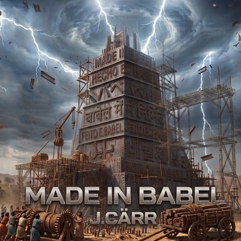

J.Cärr estrena «Made in Babel»: un álbum de Christian EDM en siete idiomas
El productor y DJ panameño presenta su álbum conceptual de ocho pistas, publicado el 9 de noviembre de 2026, que conecta fe, diversidad cultural y música electrónica.

Una misma identidad a través de siete idiomas
CIUDAD DE PANAMÁ, 13 de noviembre de 2026. El productor musical y DJ panameño J.Cärr estrenó el 9 de noviembre Made in Babel, un álbum de ocho pistas de música electrónica cristiana.
Inspirado en el relato bíblico de la Torre de Babel, el proyecto explora cómo una misma identidad de fe y música puede expresarse a través de culturas e idiomas diferentes. Su propuesta incorpora inglés, español, portugués, francés, japonés, coreano e hindi, además de una pieza multilingüe que conecta el concepto.
El álbum combina elementos de Christian EDM, Future Bass y Dubstep, con melodías emotivas, energía electrónica y una visión artística centrada en la fe y la creatividad.
La etapa Made in Babel continúa
El sencillo homónimo publicado el 5 de octubre de 2026 presentó esta etapa musical. El álbum, estrenado el 9 de noviembre, amplía la idea a ocho canciones y a una propuesta internacional.
Desde Panamá, J.Cärr busca conectar con nuevos oyentes sin renunciar a su identidad de productor y DJ de música electrónica cristiana.
J.Cärr
J.Cärr (@jcarr009) es un productor y DJ panameño de Christian EDM, Future Bass y Dubstep. Su propuesta combina fe, emoción, instrumentos distintivos y drops de música electrónica.
Sitio oficial: jcarr009.com · Prensa: prensa@jcarr009.com.
Comunicado oficial del artista. No constituye cobertura editorial independiente.